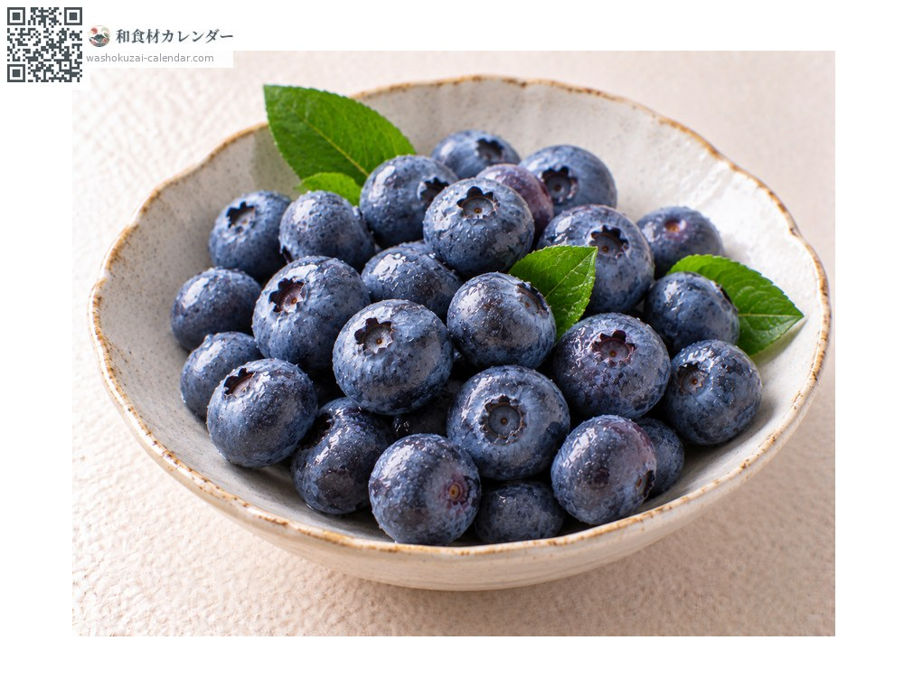
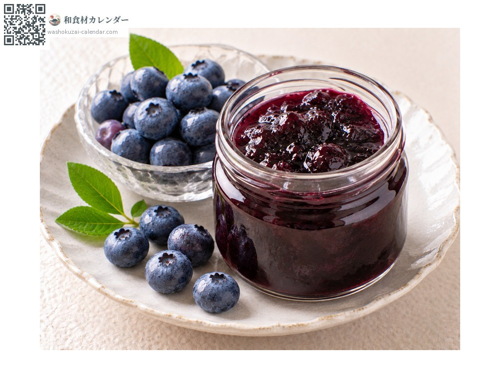
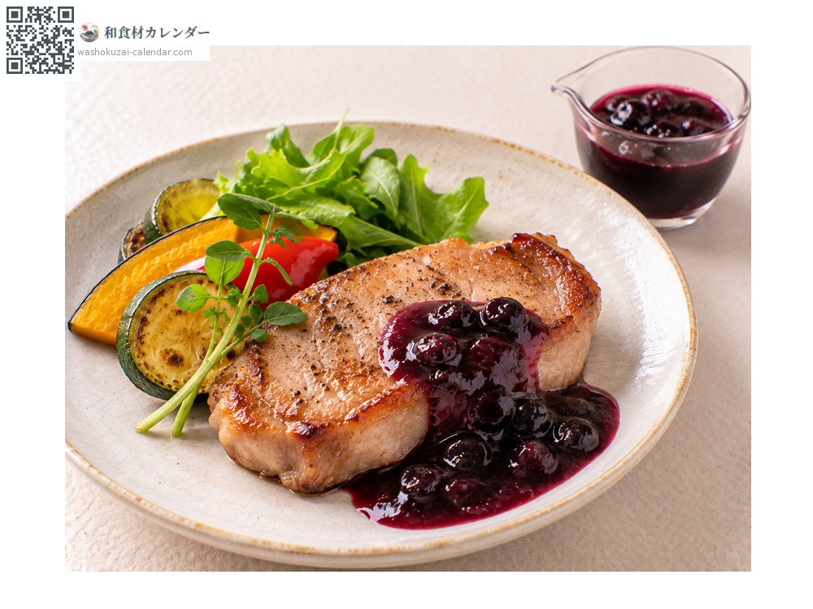
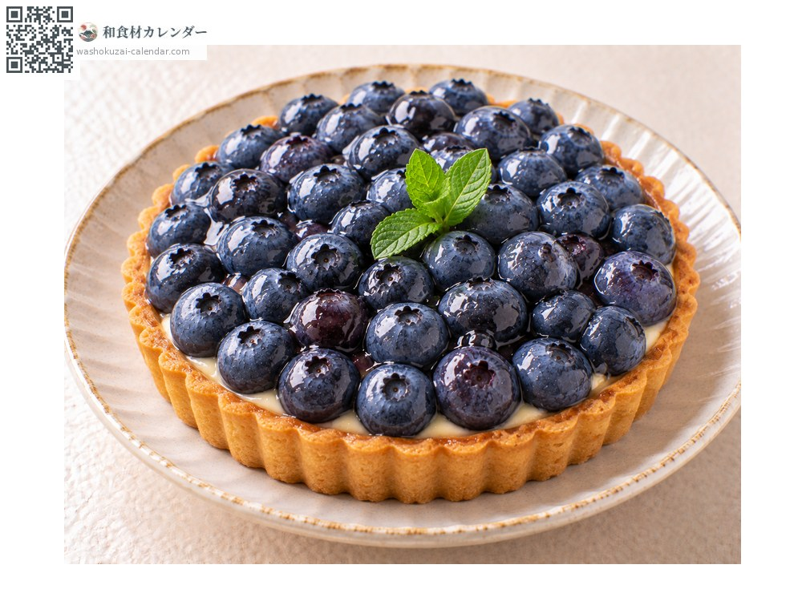

Blueberry
ブルーベリー ぶるーべりー
At its best in Jul, Aug, Sep

When it is at its best
In seasonAvailable
How to cook

Eaten fresh
Rinsed and eaten as they are; a white bloom means they are fresh.

Jam
Reduced with lemon juice, giving a vivid purple.

Sauce
Reduced and served with meat, where the acidity cuts the fat.

Tart
Laid raw over pastry, where the colour shows beautifully.
How to choose
Large berries with an even white bloom, free of wrinkles and damage.
Storage
Refrigerate unwashed in a container. They bruise easily, so use within three or four days. They also freeze.
Main areas
Good to know
The white powder on the skin is the bloom, a natural wax the fruit produces itself and a sign of freshness. Native to North America, it has been grown in Japan since the 1960s. Pick-your-own farms are common and draw visitors in early summer.